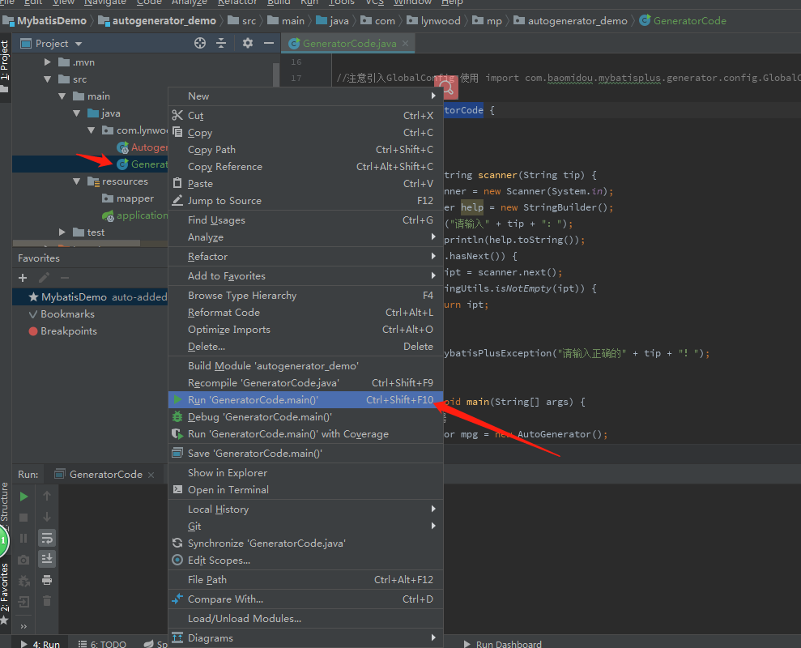
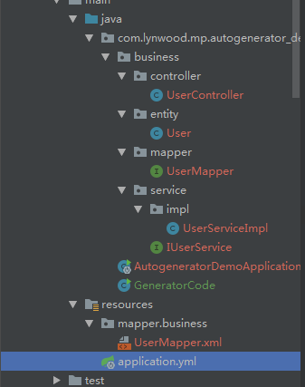
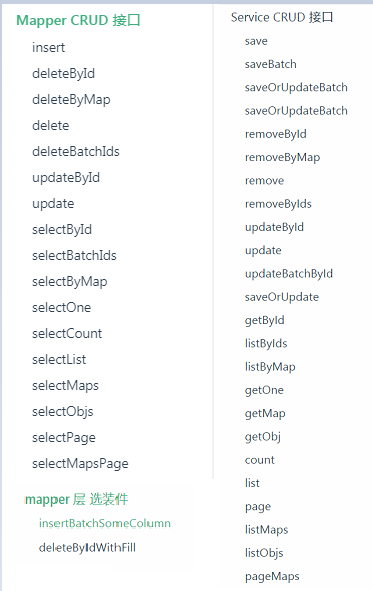
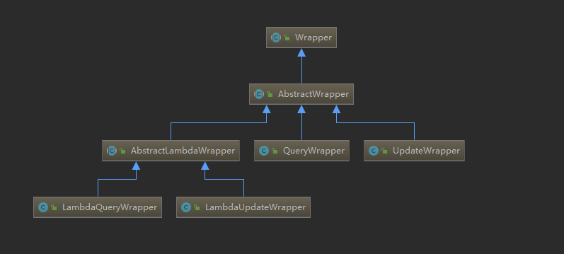
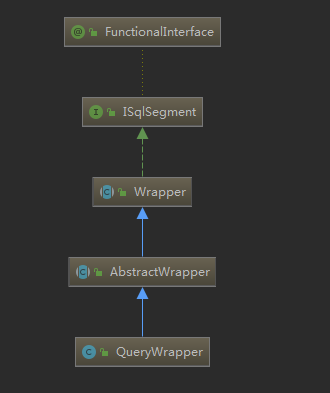

Mybatis-Plus 我来填坑~

目录:
Mybatis-Plus 我来填坑~目录:简介： 一、简单介绍官方说明 ：成绩：最新版本：开发层面MyBatis-Plus特色Mybatis-Plus中的Plus二、MP的特性三、MP框架结构四、简单的入门Demo(Mysql)Demo代码地址：Demo 环境： 初始化：数据库：MySqlDDL:DML:工程：第一步、创建工程第二步、引入依赖坐标第三步、配置数据源第四步、添加mybatis扫描位置第五步、pojo及mapper第六步、测试五、核心功能核心一-简便之-代码生成器（AutoGenerator）Demo代码地址：Demo 环境： 工程：第一步、创建模块第二步、引入依赖坐标第三步、编写代码生成器第四步、运行测试发现问题： 如果是多模块项目 生成的文件会直接到了父项目目录下解决方法：核心二 - 清晰之-CRUD接口Demo代码地址：工程：第一步、创建模块第二步、引入依赖坐标第三步、生成代码第四步、其他配置需要第五步、对MP探个究竟！发现问题: 我虽然看到了方法 但是并没有一条SQL 那么它是怎样做到查询的呢?探索:第六步、使用它Mapper - 简单的CRUD:发现问题: 虽然MP替我生成了 uuid 作为主键,但是还是想用数据库自增形式主键怎么办?解决:Mapper - 批量的CRUD接口:Mapper - 选装组件:Service - CRUD:核心三 - 强大之 -Wrapper条件构造器Demo代码地址：工程: 第一 -->第四步 同上一工程步骤 第五步、探索WrapperWrapper含义: 版本不同:3.x Wrapper主要继承结构: AbstractWrapper接口:AbstractWrapper接口:UpdateWrapper接口:第六步、使用接口##打印SQL日志配置一> 编写AbstractWrapper测试类:发现问题: boolean condition 、 R column和 Function<This, This> func 三个参数相关问题说明及使用:1.关于入参: boolean condition 2.关于入参: R column 3.关于入参: Function<This, This> func 二> 编写QueryWrapper与UpdateWrapper测试类:注意坑 在借用 lambda() 使用 lambda特性时!六、插件及扩展分页插件:热加载:逻辑删除:乐观锁插件:参考文档：
简介：
此Demo 主要应用SpringBoot 来展示Mybatis-Plus 特性， 以及在开发过程中可能应用到的插件的演示。
源码：https://github.com/wunian7yulian/MybatisPlusDemo
本文：https://wunian7yulian.github.io/MybatisPlusDemo/
相同于 MyBatis官方指南 中有了详细介绍
不同于 实践演示
目的:
主要借此做为突破口， 一是将自我学习成文记录下来， 二是将Demo 慢慢做成一个自己或者面向大众的后端脚手架工具。
规划：
分享-实践-填坑-总结-脚手架-分享-实践......
一、简单介绍
官方说明 ：
Mybatis-Plus（简称MP）是一个Mybatis的增强工具，在 Mybatis 的基础上只做增强不做改变，为简化开发而生！
成绩：
MyBatis-Plus 荣获【2018年度开源中国最受欢迎的中国软件】 TOP5
最新版本：
<dependency> <groupId>com.baomidou</groupId> <artifactId>mybatis-plus</artifactId> <version>3.0.7.1</version></dependency>开发层面MyBatis-Plus特色
- 代码生成
- 条件构造器
Mybatis-Plus中的Plus
 官方简介说明 MP 和Mybatis 就像是 游戏中的p1 和p2 一样 兄弟搭配 干活不累 、
官方简介说明 MP 和Mybatis 就像是 游戏中的p1 和p2 一样 兄弟搭配 干活不累 、
我在使用中明显感觉到 其实他更像是 马里奥和蘑菇 吃了蘑菇 我们跳的高度更高了一些。
二、MP的特性
- 无侵入：只做增强不做改变，引入它不会对现有工程产生影响，如丝般顺滑
- 损耗小：启动即会自动注入基本 CURD，性能基本无损耗，直接面向对象操作
- 强大的 CRUD 操作：内置通用 Mapper、通用 Service，仅仅通过少量配置即可实现单表大部分 CRUD 操作，更有强大的条件构造器，满足各类使用需求
- 支持 Lambda 形式调用：通过 Lambda 表达式，方便的编写各类查询条件，无需再担心字段写错
- 内置代码生成器：采用代码或者 Maven 插件可快速生成 Mapper 、 Model 、 Service 、 Controller 层代码，支持模板引擎，更有超多自定义配置等您来使用
- 内置分页插件：基于 MyBatis 物理分页，开发者无需关心具体操作，配置好插件之后，写分页等同于普通 List 查询
- 内置全局拦截插件：提供全表 delete 、 update 操作智能分析阻断，也可自定义拦截规则，预防误操作
- 支持多种数据库：支持 MySQL、MariaDB、Oracle、DB2、H2、HSQL、SQLite、Postgre、SQLServer2005、SQLServer 等多种数据库
- 支持主键自动生成：支持多达 4 种主键策略（
内含分布式唯一 ID 生成器 - Sequence），可自由配置，完美解决主键问题 - 支持 XML 热加载：Mapper 对应的 XML 支持热加载，对于简单的 CRUD 操作，甚至可以无 XML 启动
- 支持 ActiveRecord 模式：支持 ActiveRecord 形式调用，实体类只需继承 Model 类即可进行强大的 CRUD 操作
- 支持自定义全局通用操作：支持全局通用方法注入（ Write once, use anywhere ）
- 支持关键词自动转义：支持数据库关键词（order、key......）自动转义，还可自定义关键词
- 内置性能分析插件：可输出 Sql 语句以及其执行时间，建议开发测试时启用该功能，能快速揪出慢查询
- 内置 Sql 注入剥离器：支持 Sql 注入剥离，有效预防 Sql 注入攻击
三、MP框架结构

四、简单的入门Demo(Mysql)
Demo代码地址：
https://github.com/wunian7yulian/MybatisPlusDemo/tree/master/simpledemo
Demo 环境：
windows 7
jdk 1.8.0.40
idea Ultimate
maven 3.3.9
初始化：
数据库：MySql
创建数据库mp_demo_db设置字符集 utf-8
DDL:
x-- 创建简单表格DROP TABLE IF EXISTS user;CREATE TABLE `user` ( `id` bigint(20) PRIMARY KEY AUTO_INCREMENT COMMENT '主键ID', `name` varchar(30) DEFAULT NULL COMMENT '姓名', `age` int(11) DEFAULT NULL COMMENT '年龄', `email` varchar(50) DEFAULT NULL COMMENT '邮箱') ENGINE=InnoDB DEFAULT CHARSET=utf8;DML:
xxxxxxxxxx-- 初始化数据DELETE FROM user;INSERT INTO user (id, name, age, email) VALUES(1, 'Jone', 18, 'test1@baomidou.com'),(2, 'Jack', 20, 'test2@baomidou.com'),(3, 'Tom', 28, 'test3@baomidou.com'),(4, 'Sandy', 21, 'test4@baomidou.com'),(5, 'Billie', 24, 'test5@baomidou.com');工程：
为了方便快捷 选用 SpringBoot 工程作为Demo支撑
第一步、创建工程

输入项目包名 并添加mysql模块 创建完毕。
第二步、引入依赖坐标
xxxxxxxxxx <dependency> <groupId>org.springframework.boot</groupId> <artifactId>spring-boot-starter</artifactId> </dependency> <dependency> <groupId>org.springframework.boot</groupId> <artifactId>spring-boot-starter-test</artifactId> <scope>test</scope> </dependency> <dependency> <groupId>mysql</groupId> <artifactId>mysql-connector-java</artifactId> <scope>runtime</scope> </dependency> <dependency> <groupId>org.projectlombok</groupId> <artifactId>lombok</artifactId> <optional>true</optional> </dependency> <dependency> <groupId>com.baomidou</groupId> <artifactId>mybatis-plus-boot-starter</artifactId> <version>3.0.7.1</version> </dependency> <!--手动添加模板引擎--> <dependency> <groupId>org.freemarker</groupId> <artifactId>freemarker</artifactId> <version>2.3.20</version> </dependency> <dependency> <groupId>com.baomidou</groupId> <artifactId>mybatis-plus-generator</artifactId> <version>3.0.6</version> </dependency> <dependency> <groupId>com.baomidou</groupId> <artifactId>mybatis-plus-core</artifactId> <version>3.0.7.1</version> </dependency>第三步、配置数据源
在 application.yml 配置文件中添加相关配置：
xxxxxxxxxx# DataSource Configspring datasource # 这里如果有错误是因为 maven mysql包 选择了 runtime 形式的 scope 可以不用管它 继续下一步就好 driver-class-namecom.mysql.jdbc.Driver urljdbcmysql//127.0.0.13306/mp_demo_db?characterEncoding=utf8 usernameroot password123456第四步、添加mybatis扫描位置
xxxxxxxxxx("com.lynwood.mp.simpledemo.mapper")public class SimpledemoApplication { public static void main(String[] args) { SpringApplication.run(SimpledemoApplication.class, args); }}第五步、pojo及mapper
pojo:
xxxxxxxxxximport lombok.Data;public class User { private Long id; private String name; private Integer age; private String email;}mapper:
xxxxxxxxxximport com.baomidou.mybatisplus.core.mapper.BaseMapper;import com.lynwood.mp.simpledemo.model.User;public interface UserMapper extends BaseMapper<User> {}第六步、测试
xxxxxxxxxx(SpringRunner.class)public class SampleTest { private UserMapper userMapper; public void testSelect() { List<User> userList = userMapper.selectList(null); Assert.assertEquals(5, userList.size()); userList.forEach(System.out::println); }}运行结果：
xxxxxxxxxxUser{id=1, name='Jone', age=18, email='test1@baomidou.com'}User{id=2, name='Jack', age=20, email='test2@baomidou.com'}User{id=3, name='Tom', age=28, email='test3@baomidou.com'}User{id=4, name='Sandy', age=21,email='test4@baomidou.com'}User{id=5, name='Bill', age=24,email='test5@baomidou.com'}五、核心功能
核心一-简便之-代码生成器（AutoGenerator）
AutoGenerator 是 MyBatis-Plus 的代码生成器，通过 AutoGenerator 可以快速生成 Entity、Mapper、Mapper XML、Service、Controller 等各个模块的代码，极大的提升了开发效率。
Demo代码地址：
https://github.com/wunian7yulian/MybatisPlusDemo/tree/master/simpledemo
Demo 环境：
同上
工程：
第一步、创建模块
创建了autogenerator_demo模块（记得添加mysql模块 ）作为演示代码生成器功能配置。
第二步、引入依赖坐标
xxxxxxxxxx<dependency> <groupId>com.baomidou</groupId> <artifactId>mybatis-plus-boot-starter</artifactId> <version>3.0.7.1</version></dependency><!--手动添加模板引擎--><dependency> <groupId>org.freemarker</groupId> <artifactId>freemarker</artifactId> <version>2.3.20</version></dependency><dependency> <groupId>com.baomidou</groupId> <artifactId>mybatis-plus-generator</artifactId> <version>3.0.6</version></dependency>注意：MP 3.0.3 之后移除了自动模板引擎依赖，需要手动添加对应模板引擎
第三步、编写代码生成器
直接复制就行啦！
xxxxxxxxxxpackage com.lynwood.mp.autogenerator_demo;import com.baomidou.mybatisplus.core.exceptions.MybatisPlusException;import com.baomidou.mybatisplus.core.toolkit.StringPool;import com.baomidou.mybatisplus.core.toolkit.StringUtils;import com.baomidou.mybatisplus.generator.AutoGenerator;import com.baomidou.mybatisplus.generator.InjectionConfig;import com.baomidou.mybatisplus.generator.config.*;import com.baomidou.mybatisplus.generator.config.po.TableInfo;import com.baomidou.mybatisplus.generator.config.rules.NamingStrategy;import com.baomidou.mybatisplus.generator.engine.FreemarkerTemplateEngine;import java.util.ArrayList;import java.util.List;import java.util.Scanner;//注意引入GlobalConfig 使用 import com.baomidou.mybatisplus.generator.config.*;public class GeneratorCode { /** * 读取控制台内容 */ public static String scanner(String tip) { Scanner scanner = new Scanner(System.in); StringBuilder help = new StringBuilder(); help.append("请输入" + tip + "："); System.out.println(help.toString()); if (scanner.hasNext()) { String ipt = scanner.next(); if (StringUtils.isNotEmpty(ipt)) { return ipt; } } throw new MybatisPlusException("请输入正确的" + tip + "！"); } public static void main(String[] args) { // 代码生成器 AutoGenerator mpg = new AutoGenerator(); // 全局配置 GlobalConfig gc = new GlobalConfig(); String projectPath = System.getProperty("user.dir"); gc.setOutputDir(projectPath + "/src/main/java"); gc.setAuthor("Lynwood"); gc.setOpen(false); mpg.setGlobalConfig(gc); // 数据源配置 DataSourceConfig dsc = new DataSourceConfig(); dsc.setUrl("jdbc:mysql://127.0.0.1:3306/mp_demo_db?useUnicode=true&useSSL=false&characterEncoding=utf8"); // dsc.setSchemaName("public"); dsc.setDriverName("com.mysql.jdbc.Driver"); dsc.setUsername("root"); dsc.setPassword("123456"); mpg.setDataSource(dsc); // 包配置 PackageConfig pc = new PackageConfig(); pc.setModuleName(scanner("模块名")); pc.setParent("com.lynwood.mp.autogenerator_demo"); mpg.setPackageInfo(pc); // 自定义配置 InjectionConfig cfg = new InjectionConfig() { public void initMap() { // to do nothing } }; // 如果模板引擎是 freemarker String templatePath = "/templates/mapper.xml.ftl"; // 如果模板引擎是 velocity // String templatePath = "/templates/mapper.xml.vm"; // 自定义输出配置 List<FileOutConfig> focList = new ArrayList<>(); // 自定义配置会被优先输出 focList.add(new FileOutConfig(templatePath) { public String outputFile(TableInfo tableInfo) { // 自定义输出文件名 return projectPath + "/src/main/resources/mapper/" + pc.getModuleName() + "/" + tableInfo.getEntityName() + "Mapper" + StringPool.DOT_XML; } }); cfg.setFileOutConfigList(focList); mpg.setCfg(cfg); // 配置模板 TemplateConfig templateConfig = new TemplateConfig(); // 配置自定义输出模板 // templateConfig.setEntity(); // templateConfig.setService(); // templateConfig.setController(); templateConfig.setXml(null); mpg.setTemplate(templateConfig); // 策略配置 StrategyConfig strategy = new StrategyConfig(); strategy.setNaming(NamingStrategy.underline_to_camel); strategy.setColumnNaming(NamingStrategy.underline_to_camel); strategy.setSuperEntityClass(null); strategy.setEntityLombokModel(true); strategy.setRestControllerStyle(true); strategy.setSuperControllerClass(null); strategy.setInclude(scanner("表名")); strategy.setSuperEntityColumns(null); strategy.setControllerMappingHyphenStyle(true); strategy.setTablePrefix(pc.getModuleName() + "_"); mpg.setStrategy(strategy); mpg.setTemplateEngine(new FreemarkerTemplateEngine()); mpg.execute(); }}第四步、运行测试

在控制台输入：

就可以生成代码啦！
都包含 ：

发现问题： 如果是多模块项目 生成的文件会直接到了父项目目录下
原因是：在代码的全局配置中 String projectPath = System.getProperty("user.dir"); 获取Working Directory时 返回的是项目路径，并非模块路径！
解决方法：
我们可以设定运行参数选项

将 Working Directory 调整为 当前模块目录 再次运行就ok了！
- 因为没有引入mvc 模块 以至于@Controller 会飘红 再Demo中就没有将生成代码传入 大可拉取代码本地使用！
- 相关代码生成器的配置：官方生成器配置 可配置项过多无法详细介绍 有相关使用会提及
核心二 - 清晰之-CRUD接口
Demo代码地址：
https://github.com/wunian7yulian/MybatisPlusDemo/tree/master/mp_crud_demo
Mybatis-Plus 为我们提供了丰富的 增删改查接口
我们可以分为三类 Mapper的CRUD接口、Service的CRUD接口和mapper层选装件接口：

确实比较丰富 ， 下面会以具有代表性的例子来使用 演示 作为Demo主要内容
工程：
第一步、创建模块
创建mp_crud_demo模块 选择mysql
第二步、引入依赖坐标
因为需要生成表对应Pojo 还需要代码生成器
然后我们将上面的直接拷贝一下
xxxxxxxxxx<dependency> <groupId>com.baomidou</groupId> <artifactId>mybatis-plus-boot-starter</artifactId> <version>3.0.7.1</version></dependency><!--手动添加模板引擎--><dependency> <groupId>org.freemarker</groupId> <artifactId>freemarker</artifactId> <version>2.3.20</version></dependency><dependency> <groupId>com.baomidou</groupId> <artifactId>mybatis-plus-generator</artifactId> <version>3.0.6</version></dependency>再添加 lombok 依赖(因：生成代码中的实体默认是使用@Data 等注解的)
xxxxxxxxxx <dependency> <groupId>org.projectlombok</groupId> <artifactId>lombok</artifactId> <optional>true</optional></dependency>第三步、生成代码
- 复制上一Demo模块生成器代码
- 更改模块名称使之对应
pc.setParent("com.lynwood.mp.mp_crud_demo"); - 设置Working Directory 为当前模块 防止文件输出位置错误
- 运行获取代码
- 删除不必要用到的controller层
第四步、其他配置需要
设定mybatis扫描位置
在
MpCrudDemoApplication上添加注解：@MapperScan("com.lynwood.mp.mp_crud_demo.*.mapper**")注意 扫描包的位置！
配置数据源：
xxxxxxxxxx# DataSource Configspringdatasource# 这里如果有错误是因为 maven mysql包 选择了 runtime 形式的 scope 可以不用管它 继续下一步就好driver-class-namecom.mysql.jdbc.Driverurljdbcmysql//127.0.0.13306/mp_demo_db?characterEncoding=utf-8usernamerootpassword123456
第五步、对MP探个究竟！
以userMapper作为范例
查看
UserMapper:打开
UserMapper.java源代码:xxxxxxxxxxpublic interface UserMapper extends BaseMapper<User> {}不难发现它继承了
BaseMapper<User>接口打开
com.baomidou.mybatisplus.core.mapper.BaseMapper<T>查看当前接口的结构(Structure):

原来是MP 将之前的mybatis里面每个mapper的所有方法 经过泛型进行提炼到了一个BaseMapper 接口中,我们只需要将自己的mapper 继承此接口且将泛型指定便可获得强大的CRUD功能!
再去查看
UserMapper.xml文件 :
xxxxxxxxxx<?xml version="1.0" encoding="UTF-8"?><!DOCTYPE mapper PUBLIC "-//mybatis.org//DTD Mapper 3.0//EN" "http://mybatis.org/dtd/mybatis-3-mapper.dtd"><mapper namespace="com.lynwood.mp.mp_crud_demo.business.mapper.UserMapper"></mapper> 完全丢弃了Mybatis中字段映射以及一段段复杂的配置!
发现问题: 我虽然看到了方法 但是并没有一条SQL 那么它是怎样做到查询的呢?
探索:
- 首先 在项目搭建的时候添加了 坐标:
xxxxxxxxxx <dependency> <groupId>com.baomidou</groupId> <artifactId>mybatis-plus-boot-starter</artifactId> <version>3.0.7.1</version> </dependency>我们进入mybatis-plus-boot-starter的pom 发现他帮我们装配了对应版本的mybatis-plus 并且依赖了其他 例如: spring-boot-autoconfigure``spring-boot-starter-jdbc等;
因为了解SpringBoot中配置入口是一个@Configuration
那么打开mybatis-plus-boot-starter的jar包 看到:MybatisPlusAutoConfiguration.java:
x
...public class MybatisPlusAutoConfiguration { ... public SqlSessionFactory sqlSessionFactory(DataSource dataSource) throws Exception { ... if (this.applicationContext.getBeanNamesForType(ISqlInjector.class, false, false).length > 0) { ISqlInjector iSqlInjector = (ISqlInjector)this.applicationContext.getBean(ISqlInjector.class); globalConfig.setSqlInjector(iSqlInjector); } factory.setGlobalConfig(globalConfig); return factory.getObject(); }...}看到它在设置sqlSessionFactory的时候为我们指定了一个com.baomidou.mybatisplus.core.injector.ISqlInjector.class 作为factory.globalConfig.sqlInjector(SQL注入器)
然后 我们打开:ISqlInjector的实现类AbstractSqlInjector
xxxxxxxxxx... public abstract class AbstractSqlInjector implements ISqlInjector { ... public void inspectInject(MapperBuilderAssistant builderAssistant, Class<?> mapperClass) { ... List<AbstractMethod> methodList = this.getMethodList(); Assert.notEmpty(methodList, "No effective injection method was found.", new Object[0]); methodList.forEach((m) -> { m.inject(builderAssistant, mapperClass); }); ... } }methodList 是所有的方法的一个集合 其元素类型都是AbstractMethod.class类型的, 并且对每个方法都进行了inject(...),
那么查看inject()方法源码:
xxxxxxxxxxpublic void inject(MapperBuilderAssistant builderAssistant, Class<?> mapperClass) { ... this.injectMappedStatement(mapperClass, modelClass, tableInfo); }}原来最终调用了injectMappedStatement()方法
然而
xxxxxxxxxxpublic abstract MappedStatement injectMappedStatement(Class<?> var1, Class<?> var2, TableInfo var3);是抽象的 需要自己的子类去实现的

我们以其中一个 SelectById.class 作为例子查看
x
public MappedStatement injectMappedStatement(Class<?> mapperClass, Class<?> modelClass, TableInfo tableInfo) { SqlMethod sqlMethod = SqlMethod.SELECT_BY_ID; SqlSource sqlSource = new RawSqlSource(this.configuration, String.format(sqlMethod.getSql(), this.sqlSelectColumns(tableInfo, false), tableInfo.getTableName(), tableInfo.getKeyColumn(), tableInfo.getKeyProperty()), Object.class); return this.addSelectMappedStatement(mapperClass, sqlMethod.getMethod(), sqlSource, modelClass, tableInfo); }再去查看 SqlMethod.SELECT_BY_ID;:
xxxxxxxxxxSELECT_BY_ID("selectById", "根据ID 查询一条数据", "SELECT %s FROM %s WHERE %s=#{ %s}"),soga~
结束 最后实际上 MP将SQL语句 封装了固定的模板 com.baomidou.mybatisplus.core.enums.SqlMethod 从而提供给了我们便捷的使用!
第六步、使用它
我们使用非Wrapper的具有代表性的接口作为Demo的演示
Wrapper 在后面会有单独的Demo演示
Mapper - 简单的CRUD:
xxxxxxxxxx(SpringRunner.class)public class MpCrudDemoApplicationTests { private UserMapper userMapper; public void simplenessMapperCURD() { //增加 User addUser = new User(); addUser.setAge(18); addUser.setEmail("wunian_@hotmail.com"); addUser.setName("Lynwood"); userMapper.insert(addUser); // insert 之后是将id装配到实体对象里的 System.out.println("add:\n" + addUser); // User(id=1082883152404103169, name=Lynwood, age=18, email=wunian_@hotmail.com) // id = 1082883152404103169 之所以这么长是因为 MP底层给我们自己以uuid 的形式添加了 user对象的id属性 //修改 User updateUser = new User(); updateUser.setId(1082883152404103169L); updateUser.setName("ok?"); userMapper.updateById(updateUser); System.out.println("update:\n" + updateUser); // User(id=1082883152404103169, name=ok?, age=null, email=null) // 刷新数据库 更改成功 但是没有讲其他对象进行装配 //查询 User selectUser = userMapper.selectById(1082883152404103169L); System.out.println("select:\n" + selectUser); //User(id=1082883152404103169, name=ok?, age=18, email=wunian_@hotmail.com) //删除 int i = userMapper.deleteById(1082883152404103169L); if (i==1){ System.out.println("delete:\n" + "删除成功!"); //刷新库 删除成功 } }}发现问题: 虽然MP替我生成了 uuid 作为主键,但是还是想用数据库自增形式主键怎么办?
解决:
MP提供的主键策略有:
- AUTO 数据库ID自增
- INPUT 用户输入ID
- ID_WORKER 全局唯一ID，Long类型的主键
- ID_WORKER_STR 字符串全局唯一ID
- UUID 全局唯一ID，UUID类型的主键
- NONE 该类型为未设置主键类型
MP的主键策略默认使用的是ID_WORKER (详情:https://mybatis.plus/config/#idtype)
在User 中设定 id字段为@TableId(type = IdType.AUTO)
或者 全局设置 使用主键策略,在yaml 添加:
xxxxxxxxxxmybatis-plus global-config db-config id-typeauto重要: 因为刚才的测试插入了id为:1082883152404103169的 数据 我们需要将自增序列首先恢复正常! 否则下一个id为1082883152404103170 看上去也是乱的!! 小心坑哈~
xxxxxxxxxxdelete from user;alter table user auto_increment= 1;尝试 增加操作 输出:
xxxxxxxxxxadd:User(id=1, name=Lynwood, age=18, email=wunian_@hotmail.com)Mapper - 批量的CRUD接口:
填充测试数据:
xxxxxxxxxxDELETE FROM user;INSERT INTO user ( name, age, email) VALUES( 'Lynwood',18,'wunian_@hotmail.com')( 'Jone', 18, 'test1@baomidou.com'),( 'Jack', 20, 'test2@baomidou.com'),( 'Tom', 28, 'test3@baomidou.com'),( 'Sandy', 21, 'test4@baomidou.com'),( 'Billie', 24, 'test5@baomidou.com');测试:
xxxxxxxxxx public void batchMapperCURD() { // 多id 查询 List<Long> idList = new ArrayList<>(); idList.add(1L); idList.add(3L); List<User> userList = userMapper.selectBatchIds(idList);// id的多个查询 System.out.println("selectBatch:" ); userList.forEach(System.out::println); //User(id=1, name=Lynwood, age=18, email=wunian_@hotmail.com) //User(id=3, name=Jack, age=20, email=test2@baomidou.com) // 多条件 查询 Map<String,Object> stringObjectMap = new HashMap<>(); stringObjectMap.put("age",18); stringObjectMap.put("id",2); List<User> selectByMap = userMapper.selectByMap(stringObjectMap);// 字段-值 键值对集合 作为 '且' 关系 System.out.println("selectByMap:" ); selectByMap.forEach(System.out::println); //User(id=2, name=Jone, age=18, email=test1@baomidou.com) // 多id 删除 int deleteCount = userMapper.deleteBatchIds(idList);// id的多个删除 System.out.println("deleteBatch:\n"+ deleteCount ); // 2 // 多条件 删除 int deleteCount2 = userMapper.deleteByMap(stringObjectMap);// id的多个查询 System.out.println("deleteByMap:\n"+ deleteCount2 ); // 1 } 注意使用*ByMap() 方法时 条件是 且关系就ok了!
Mapper - 选装组件:
查看了MP作者说的:

作者在源码注释中是这么写的....:
xxxxxxxxxx/** * <p> 批量新增数据,自选字段 insert </p> * <p> 不同的数据库支持度不一样!!! 只在 mysql 下测试过!!! 只在 mysql 下测试过!!! 只在 mysql 下测试过!!! </p> * <p> 除了主键是 <strong> 数据库自增的未测试 </strong> 外理论上都可以使用!!! </p> * <p> 如果你使用自增有报错或主键值无法回写到entity,就不要跑来问为什么了,因为我也不知道!!! </p> * <p> * 自己的通用 mapper 如下使用: * int insertBatchSomeColumn(List<T> entityList); * * <li> 注意1: 不要加任何注解 !! </li> * <li> 注意2: 自选字段 insert !!,如果个别字段在 entity 里为 null 但是数据库中有配置默认值, insert 后数据库字段是为 null 而不是默认值 </li> * * <p> * 常用的构造入参: * </p> */┓( ´∀` )┏ ~
然后分析其作用 觉得既然有wrapper的强大条件构造器 决定不再分析 想了解可以点击:
不过 案例 说明了MP的一些可以自己扩展的一个流程 :
第一步: 在
UserMapper添加方法xxxxxxxxxx/** 清空表数据 */void clearTable();第二步:自定义实现
在于
business同级下创建mp_injector/methods目录并创建类名CLearTable.java要与添加的方法名 相同!且要实现
com.baomidou.mybatisplus.core.injector.AbstractMethod完成自定义扩展xxxxxxxxxxpublic class ClearTable extends AbstractMethod {public MappedStatement injectMappedStatement(Class<?> mapperClass, Class<?> modelClass, TableInfo tableInfo) {/* 执行 SQL */String sql = "delete from " + tableInfo.getTableName();/* mapper 接口方法名一致 */String method = "clearTable";SqlSource sqlSource = languageDriver.createSqlSource(configuration, sql, modelClass);return this.addDeleteMappedStatement(mapperClass, method, sqlSource);}}第三步:将自定义实现 添加到MP方法列表
在
mp_injector下创建MySqlInjector.java来进行对MP的扩展操作:需要继承
com.baomidou.mybatisplus.core.injector.DefaultSqlInjector并且重写 MP获取方法列表的方法xxxxxxxxxxpublic class MySqlInjector extends DefaultSqlInjector {public List<AbstractMethod> getMethodList() {List<AbstractMethod> methodList = super.getMethodList();//增加了 自定义方法methodList.add(new ClearTable());return methodList;}}第四步:测试
xxxxxxxxxxpublic void myInjectorMapperCURD() {userMapper.clearTable();}查库 全部删除了
总结:
不难发现其实际上就是 在上文 对MP探个究竟 中探索到的 所有方法的原理
Service - CRUD:
非Wrapper部分基本与Mapper 接口一致 只是将接口提到了service层.
略~
核心三 - 强大之 -Wrapper条件构造器
Demo代码地址：
https://github.com/wunian7yulian/MybatisPlusDemo/tree/master/mp_wrapper_demo
工程:
第一 -->第四步 同上一工程步骤
- 注意更改生成器中的 包名模块名
- 复制yaml 时注意增加 MP主键策略配置:
xxxxxxxxxxmybatis-plus global-config db-config id-typeauto第五步、探索Wrapper
备:关于 java8 lambda 表达式 默认为熟悉
Wrapper含义:

版本不同:
因为MP 对外已经有了两个大的版本 2.x 和3.x版本
在2.x版本中 EntityWrapper作为Wrapper 的主要继承实现,
例:
xxxxxxxxxx EntityWrapper<User> ew = new EntityWrapper<User>(); ew.setEntity(new User(1)); ew.where("user_name={0}", "'zhangsan'").and("id=1") .orNew("user_status={0}", "0").or("status=1") .notLike("user_nickname", "notvalue") .andNew("new=xx").like("hhh", "ddd") .andNew("pwd=11").isNotNull("n1,n2").isNull("n3") .groupBy("x1").groupBy("x2,x3") .having("x1=11").having("x3=433") .orderBy("dd").orderBy("d1,d2"); System.out.println(ew.getSqlSegment());实际上 此包装实际上是使用的是 数据库字段 不是Pojo 里面的成员变量
在3.x 升级中对Wrapper进行了改动:
全面支持了jdk8的Lambda的使用
Wrapper<T>实现类的改动1.
EntityWrapper<T>更名为QueryWrapper<T>2.新增一个实现类UpdateWrapper<T>用于update方法BaseMapper<T>的改动1.去除了
insertAllColumn(T entity)方法 2.去除了updateAllColumn(T entity)方法 3.新增update(T entity, Wrapper<T> updateWrapper)方法
在3.x 中将 所有的操作划分成 查询QueryWrapper和UpdateWrapper 并且将其共有的方法做了一层抽离放到了AbstractWrapper中
3.x Wrapper主要继承结构:

我们查看四个实现类:QueryWrapper、UpdateWrapper 、LambdaQueryWrapper、LambdaUpdateWrapper 的一个总体抽象: AbstractWrapper
它将共有的提升到这一层并做了实现,
其实主要是对SQL语言所有DML语句中公用的一些关键字做了统一的接口
AbstractWrapper接口:

AbstractWrapper接口:

UpdateWrapper接口:

第六步、使用接口
##打印SQL日志配置
为了方便查看最后MP封装转换的最终SQL，在yml配置文件中添加配置:
x
mybatis-plus configuration log-implorg.apache.ibatis.logging.stdout.StdOutImpl一> 编写AbstractWrapper测试类:
xxxxxxxxxx...(SpringRunner.class)public class MpWrapperDemoApplicationAbstractWrapperTests { private UserMapper userMapper; /** * 测试 allEq() 等同于 WHERE name = ? AND age = ? * + * 使用 selectList() 返回多个指定类型对象 的集合 * */ public void abstractWrapperTest_allEq() { QueryWrapper<User> userQueryWrapper = new QueryWrapper<>(); HashMap<String,Object> param = new HashMap<>(); param.put("name","Lynwood"); param.put("age","18"); userQueryWrapper.allEq(param); List<User> userList = userMapper.selectList(userQueryWrapper); userList.forEach(System.out::println); /** * 输出: * ==> Preparing: SELECT id,name,age,email FROM user WHERE name = ? AND age = ? * ==> Parameters: Lynwood(String), 18(String) */ } /** * 测试 eq() 等同于 WHERE name = ? * + * 使用selectOne() * 当返回多条会报错 */ public void abstractWrapperTest_eq() { QueryWrapper<User> userQueryWrapper = new QueryWrapper<>(); userQueryWrapper.eq("name","Lynwood"); User user = userMapper.selectOne(userQueryWrapper); System.out.println(user); /** * 输出: * Preparing: SELECT id,name,age,email FROM user WHERE name = ? * Parameters: Lynwood(String) */ } /** not equals 缩写 ~~ * * 测试 ne() 等同于 WHERE age <> ? * + * 使用 selectObjs() 返回多个 非指定类型对象 的集合 * */ public void abstractWrapperTest_ne() { QueryWrapper<User> userQueryWrapper = new QueryWrapper<>(); userQueryWrapper.ne("age", 18); List<Object> objectList = userMapper.selectObjs(userQueryWrapper); objectList.forEach(System.out::println); /** * 输出: * ==> Preparing: SELECT id,name,age,email FROM user WHERE age <> ? * ==> Parameters: 18(Integer) */ } /***************************************************** 多接口连用 * 默认AND 关系*******************************/ /** 测试 * gt() : greater than 等同于 > * ge() : greater equals 等同于 >= * lt() : less than 等同于 < * le() : less equals 等同于 <= * * 使用 selectMaps() 返回多个 指定到Map做封装 的集合 * */ public void abstractWrapperTest_gt_ge_lt_le() { QueryWrapper<User> userQueryWrapper = new QueryWrapper<>(); userQueryWrapper.ge("age", 21); userQueryWrapper.le("age", 24); List<Map<String, Object>> mapList = userMapper.selectMaps(userQueryWrapper); mapList.forEach(System.out::println); /** * 输出: * ==> Preparing: SELECT id,name,age,email FROM user WHERE age >= ? AND age <= ? * ==> Parameters: 21(Integer), 24(Integer) */ } /** * 测试 * between() 等同于 WHERE age between ? and ? * notBetween() 等同于 WHERE age not between ? and ? * + * 使用 selectList() 返回多个 非指定类型对象 的集合 * */ public void abstractWrapperTest_between() { QueryWrapper<User> userQueryWrapper = new QueryWrapper<>(); userQueryWrapper .between("age", 18,24) .notBetween("id",0,11);// 支持链式调用 List<User> userList = userMapper.selectList(userQueryWrapper); userList.forEach(System.out::println); /** * 输出: ==> Preparing: SELECT id,name,age,email FROM user WHERE age BETWEEN ? AND ? AND id NOT BETWEEN ? AND ? ==> Parameters: 18(Integer), 24(Integer), 0(Integer), 11(Integer) */ } /** * 测试 * like() 等同于 LIKE '%?%' * notLike() 等同于 NOT LIKE '%?%' * likeLeft() 等同于 LIKE '%?' * likeRight() 等同于 LIKE '?%' * + * 使用 selectCount() 返回查询到的条数 */ public void abstractWrapperTest_like() { QueryWrapper<User> userQueryWrapper = new QueryWrapper<>(); userQueryWrapper .like("email", "test") .notLike("email","test4") .likeRight("name","J") // J% .likeLeft("name","e"); //%e Integer selectCount = userMapper.selectCount(userQueryWrapper); System.out.println(selectCount); /** * 输出: ==> Preparing: SELECT id,name,age,email FROM user WHERE email LIKE ? AND email NOT LIKE ? AND name LIKE ? AND name LIKE ? ==> Parameters: %test%(String), %test4%(String), J%(String), %e(String) */ } /** * 测试 * null() 等同于 is null * isNotNull() 等同于 is not null * */ public void abstractWrapperTest_null() { QueryWrapper<User> userQueryWrapper = new QueryWrapper<>(); userQueryWrapper .isNotNull("name"); Integer selectCount = userMapper.selectCount(userQueryWrapper); System.out.println(selectCount); /** * 输出: ==> Preparing: SELECT COUNT(1) FROM user WHERE name IS NOT NULL ==> Parameters: <== Columns: COUNT(1) */ } /** * 测试 * in() 等同于 IN (?,?) * notIn() 等同于 NOT IN (?,?) * inSql() 等同于 IN (sql) * notInSql() 等同于 NOT IN (sql) */ public void abstractWrapperTest_in() { QueryWrapper<User> userQueryWrapper = new QueryWrapper<>(); List<Long> idLists = new ArrayList<>(); idLists.add(11L); idLists.add(13L); userQueryWrapper // .in("id",idLists); .inSql("id","select id from user where id<=15"); List<User> userList = userMapper.selectList(userQueryWrapper); userList.forEach(System.out::println); /** * 输出: ==> Preparing: SELECT id,name,age,email FROM user WHERE id IN (select id from user where id<=15) ==> Parameters: */ } /** * 测试 * groupBy() .. 支持多参数 等同于 GROUP BY age,name,id */ public void abstractWrapperTest_group() { QueryWrapper<User> userQueryWrapper = new QueryWrapper<>(); userQueryWrapper .groupBy("age","name","id"); List<User> userList = userMapper.selectList(userQueryWrapper); userList.forEach(System.out::println); /** * 输出: ==> Preparing: SELECT id,name,age,email FROM user GROUP BY age,name,id ==> Parameters: */ } /** * 测试 * orderBy() .. 支持多参数 等同于 关于 condition * orderByDesc() .. 支持多参数 等同于 ORDER BY age DESC , id DESC * orderByAsc() .. 支持多参数 等同于 ORDER BY age ASC , id ASC */ public void abstractWrapperTest_order() { QueryWrapper<User> userQueryWrapper = new QueryWrapper<>(); userQueryWrapper .orderByAsc("age","id"); List<User> userList = userMapper.selectList(userQueryWrapper); userList.forEach(System.out::println); /** * 输出: ==> Preparing: SELECT id,name,age,email FROM user ORDER BY age ASC , id ASC ==> Parameters: */ } /** * 测试 * having() .. 支持多参数 等同于 HAVING sum(id)> ? */ public void abstractWrapperTest_having() { QueryWrapper<User> userQueryWrapper = new QueryWrapper<>(); userQueryWrapper .groupBy("age") .having("sum(id)>{0}",20);// 替换里面的参数 List<User> userList = userMapper.selectList(userQueryWrapper); userList.forEach(System.out::println); /** * 输出: ==> Preparing: SELECT id,name,age,email FROM user GROUP BY age HAVING sum(id)>? ==> Parameters: 20(Integer) */ } /** * 测试 * or() 等同于 or * and() 等同于 and */ public void abstractWrapperTest_or_and() { // 简单 or 和and QueryWrapper<User> userQueryWrapper = new QueryWrapper<>(); userQueryWrapper .eq("id",11) .or() // 默认and()// .and() // 两个不能连用 .eq("id",13); List<User> userList = userMapper.selectList(userQueryWrapper); userList.forEach(System.out::println); /** * 输出: ==> Preparing: SELECT id,name,age,email FROM user WHERE id = ? OR id = ? ==> Parameters: 11(Integer), 13(Integer) */ // 嵌套的 or 和and QueryWrapper<User> userQueryWrapper1 = new QueryWrapper<>(); userQueryWrapper1 .eq("id",14) .or(i -> i.eq("name", "Lynwood").ne("age", "18")); List<User> userList1 = userMapper.selectList(userQueryWrapper1); userList1.forEach(System.out::println); /**输出: * * ==> Preparing: SELECT id,name,age,email FROM user WHERE id = ? OR ( name = ? AND age <> ? ) * ==> Parameters: 14(Integer), Lynwood(String), 18(String) */ /**!!!!!!!!!!!! .or(i -> i.eq("name", "Lynwood").ne("age", "18")); 解释 见下文发现问题*/ } /** * 测试 * apply() 动态传参防止 sql注入 占位符 替换 以值的形式添加 */ public void abstractWrapperTest_apply() { QueryWrapper<User> userQueryWrapper = new QueryWrapper<>(); userQueryWrapper .apply("id>{0}",13); List<User> userList = userMapper.selectList(userQueryWrapper); userList.forEach(System.out::println); /** * 输出: ==> Preparing: SELECT id,name,age,email FROM user WHERE id>? ==> Parameters: 13(Integer) */ } /** * 测试 * last() 在sql 最后追加 * * 最常用 last("limit 1") */ public void abstractWrapperTest_last() { QueryWrapper<User> userQueryWrapper = new QueryWrapper<>(); userQueryWrapper .last("limit 2"); List<User> userList = userMapper.selectList(userQueryWrapper); userList.forEach(System.out::println); /** * 输出: ==> Preparing: SELECT id,name,age,email FROM user limit 2 ==> Parameters: */ } /** * 测试 * exists() 拼接 EXISTS ( sql语句 ) * notExists() 拼接 NOT EXISTS ( sql语句 ) */ public void abstractWrapperTest_exists() { QueryWrapper<User> userQueryWrapper = new QueryWrapper<>(); userQueryWrapper .exists("SELECT id,name,age,email FROM user where id= 222"); List<User> userList = userMapper.selectList(userQueryWrapper); userList.forEach(System.out::println); /** * 输出: ==> Preparing: SELECT id,name,age,email FROM user WHERE EXISTS (SELECT id,name,age,email FROM user where id= 222) ==> Parameters: <== Total: 0 */ } /** * 测试 * nested() 正常嵌套 (无 or and 模式嵌套) */ public void abstractWrapperTest_nested() { QueryWrapper<User> userQueryWrapper = new QueryWrapper<>(); userQueryWrapper .nested(i -> i.eq("name", "Lynwood").eq("age", "18")); List<User> userList = userMapper.selectList(userQueryWrapper); userList.forEach(System.out::println); /** * 输出: ==> Preparing: SELECT id,name,age,email FROM user WHERE ( name = ? AND age = ? ) ==> Parameters: Lynwood(String), 18(String) */ }}发现问题: boolean condition 、R column和 Function<This, This> func 三个参数相关问题
说明及使用:
1.关于入参: boolean condition
- 以下出现的第一个入参
boolean condition表示该条件是否加入最后生成的sql中,默认是true
使用ne() 方法举例 源码 :
xxxxxxxxxx public This ne(boolean condition, R column, Object val) { return addCondition(condition, column, NE, val); }测试编写:
xxxxxxxxxx /** * 测试 boolean condition */ public void abstractWrapperTest_Condition() { Integer age = new Random().nextInt(25); System.out.println("年龄: " + age); QueryWrapper<User> userQueryWrapper = new QueryWrapper<>(); boolean condition = age<=18; userQueryWrapper.ne(condition,"name","Lynwood"); List<User> userList = userMapper.selectList(userQueryWrapper); userList.forEach(System.out::println); } 生成的随机数age 小于18岁的 不要让他查到name="Lynwood"的信息
再此看来等同于*mapper.xml配置
xxxxxxxxxxWHERE 1=1 <if test="age <= 18"> AND name <> #{name}</if>帮我们提入到了每个方法中,并且省去我们关系 是否写AND关键字或者 必须有 WHERE 1=1这些难看却又不必要的配置
2.关于入参: R column
- 以下方法在入参中出现的
R为泛型,在普通wrapper中是String,在LambdaWrapper中是函数(例:Entity::getId,Entity为实体类,getId为字段id的getMethod)- 以下方法入参中的
R column均表示数据库字段,当R为String时则为数据库字段名(字段名是数据库关键字的自己用转义符包裹!)!而不是实体类数据字段名!!!
查看源码 发现实际上 eq()、ne()... 等需要传入R column的方法实际最后都是调用了addCondition(...) 方法

对 R column参数做了 columnToString(column)操作
而 AbstractWrapper实际中的此方法是抽象的:
xxxxxxxxxx /** * 获取 columnName */ protected abstract String columnToString(R column);
而我们再去查看我们使用的 QueryWrapper与UpdateWrapper 中的具体实现都为:
xxxxxxxxxx protected String columnToString(String column) { return column; }实际上是转换成了String类型, 那么为什么使用了泛型呢?
我们再返回去查看他的另一个实现类AbstractLambdaWrapper 中的实现:
xxxxxxxxxxprotected String columnToString(SFunction<T, ?> column) { return getColumn(LambdaUtils.resolve(column));}原来这里使用泛型 为了扩展Lambda方式使用!
lambda
- 获取
LambdaWrapper在QueryWrapper中是获取LambdaQueryWrapper在UpdateWrapper中是获取LambdaUpdateWrapper
测试:
xxxxxxxxxx /** * 测试 R column */ public void abstractWrapperTest_Column() { QueryWrapper<User> userQueryWrapper = new QueryWrapper<>();// userQueryWrapper.ne("name","Lynwood"); userQueryWrapper.lambda().eq(User::getName,"Lynwood"); List<User> userList = userMapper.selectList(userQueryWrapper); userList.forEach(System.out::println); }3.关于入参: Function<This, This> func
其实再测试AbstractWrapper中的 or/and 嵌套中已经使用过了
以or()举例
需要传入的是 Function的实现 而Function的定义是:
xxxxxxxxxx/** * Represents a function that accepts one argument and produces a result. * 表示接受一个参数执行生成结果的函数对象。 * @since 1.8 */public interface Function<T, R> {在我们使用过程中 往往是为了嵌套 我们传入的可能是另一个Wrapper 让他和当前的Wrapper去链接/嵌套起来
那么在:
xxxxxxxxxx userQueryWrapper.ne("name","Lynwood") .or(i -> i.eq("age", "18"));中 我们实际上传入了一个匿名的Wrapper对象,那么这个匿名的Wrapper对象怎么符合了Function的要求呢
我们查看这个i变量 : 
他的类型是与调用对象一致的 查看 QueryWrapper<User>的继承关系:

实际上我们使用的所有接口都去间接继承了ISqlSegment 接口 ,而它:
xxxxxxxxxxpackage com.baomidou.mybatisplus.core.conditions;public interface ISqlSegment extends Serializable {是被@FunctionalInterface 标识的 与:
xxxxxxxxxxpackage java.util.function;public interface Function<T, R> {是一样的, 所以我们使用它可以这样简便的使用啦:
测试:
xxxxxxxxxx public void abstractWrapperTest_Func() { QueryWrapper<User> userQueryWrapper = new QueryWrapper<>(); userQueryWrapper.ne("name","Lynwood"); userQueryWrapper.or(new Function<QueryWrapper<User>, QueryWrapper<User>>() { public QueryWrapper<User> apply(QueryWrapper<User> userQueryWrapper) { return userQueryWrapper.eq("age", "18"); } }); // 等同与 // userQueryWrapper.ne("name","Lynwood") // .or(i -> i.eq("age", "18")); List<User> userList = userMapper.selectList(userQueryWrapper); userList.forEach(System.out::println); }二> 编写QueryWrapper与UpdateWrapper测试类:
其实在上面的所有测试中其返回值都是完全的装配到了实体对象中,但是有的时候 比如有个字段很大 很消耗内存,同时也用不到,那么我如何把他取消掉.设置返回值为我们需要的几个字段就好
select()测试
注意坑 在借用 lambda() 使用 lambda特性时!
xxxxxxxxxx /** * 测试 QueryWrapper.select() * */ public void abstractWrapperTest_Select() { QueryWrapper<User> userQueryWrapper = new QueryWrapper<>();// userQueryWrapper.eq("age",18)// .select("id","name"); userQueryWrapper.eq("age",18) .select(User.class,i -> false);//只返回id List<User> userList = userMapper.selectList(userQueryWrapper); // SELECT id FROM user WHERE age = ? userList.forEach(System.out::println); //前方有坑 注意: 注意!!!!!!!!!!! //关于LambdaQueryWrapper的使用这样用是没问题的 LambdaQueryWrapper<User> lambdaQueryWrapper = new QueryWrapper<User>().lambda(); lambdaQueryWrapper.select(User::getId,User::getAge); List<User> userList1 = userMapper.selectList(lambdaQueryWrapper); //SELECT id,age FROM user userList1.forEach(System.out::println); // 这样设置是无效的!!!! QueryWrapper<User> userQueryWrapper2 = new QueryWrapper<>(); userQueryWrapper2.lambda().select(User::getId,User::getAge); List<User> userList2 = userMapper.selectList(userQueryWrapper2); // SELECT id,name,age,email FROM user userList2.forEach(System.out::println); }set() setSql() 测试
xxxxxxxxxx /** * 测试 UpdateWrapper.set() * 测试 UpdateWrapper.setSql() */ public void abstractWrapperTest_Set() { UpdateWrapper<User> userUpdateWrapper = new UpdateWrapper<>(); // 更新id==11 的age 为19 userUpdateWrapper.set("age",19).eq("id",11); // 附加更新内容 name 设置 User user = new User(); user.setName("Lynwood1"); userMapper.update(user,userUpdateWrapper); /** * ==> Preparing: UPDATE user SET name=?, age=? WHERE id = ? * ==> Parameters: Lynwood1(String), 19(Integer), 11(Integer) * <== Updates: 1 */ UpdateWrapper<User> userUpdateWrapper1 = new UpdateWrapper<>(); userUpdateWrapper1.setSql("name='wunian7yulian'").eq("id",11); // 附加更新内容为空时 不能传入null 需要传入空实体对象 userMapper.update(new User(),userUpdateWrapper1); /** * ==> Preparing: UPDATE user SET name='wunian7yulian' WHERE id = ? * ==> Parameters: 11(Integer) * <== Updates: 1 */ }六、插件及扩展
分页插件:
热加载:
逻辑删除:
乐观锁插件:
参考文档：
MyBatis-Plus 官方文档 : https://mp.baomidou.com/
MyBatis-Plus 配置进阶 : https://mp.baomidou.com/config/
MyBatis-Plus 代码生成器配置 : https://mp.baomidou.com/config/generator-config.html
MyBatis-Plus sql注入原理 : https://www.liangzl.com/get-article-detail-19831.html
Mybatis-Plus使用全解 : https://www.jianshu.com/p/7299cba2adec